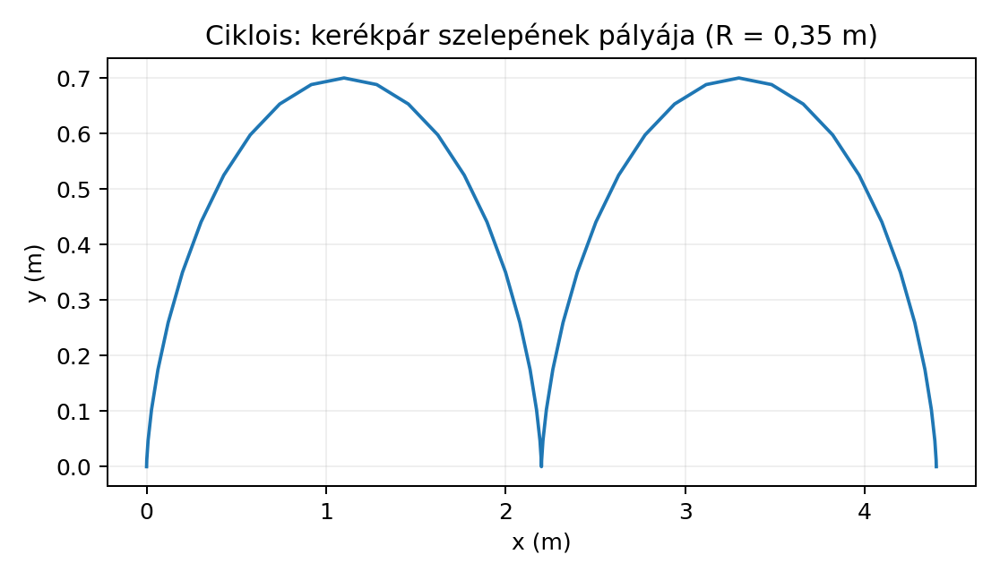

Egy repülőgép leszállási útvonalát, egy hullámvasút pályáját vagy egy
kerékpár szelepének mozgását egyetlen fogalom, a paraméteres
görbe írja le. Az előző alfejezetben megismertük a vektorokat
és a skaláris szorzatot; most arra használjuk őket, hogy a térben
egyeneseket, síkokat és mozgó pontok pályáját adjunk meg. A cél, hogy a
pálya egyenletéből ki tudjuk számolni a sebességet, a gyorsulást, az
érintő irányát és a megtett út hosszát. Ez a fejezet a későbbi
többváltozós analízis és a vektoranalízis alapja: a vonalintegráloknál,
a komplex körintegráloknál és a ferde hajítás projektjében is újra
találkozunk ezekkel a görbékkel.
21.2.2 Szemléletes kép
Képzeljünk el egy kerékpárkereket, amely a földön gördül. A szelep a
kerék peremén van, tehát a középpont egyenes vonalban halad, de a szelep
pályája csúcsokban találkozó ívekből álló görbe, a
ciklois. Az alábbi ábra a szelep pályáját mutatja, ha a
kerék sugara
m, és a kerék két teljes fordulatot tesz meg.

Ciklois: kerékpár szelepének pályája (R =
0,35 m) - A paraméteres egyenlet x = R(t − sin t), y = R(1 − cos t); R =
0,35 m, t 0-tól 4π-ig (két teljes kerékfordulat) 49 pontban; a
csúcsokban a szelep sebessége 0.
A pontok a ciklois jellegzetes alakját (két ív, a csúcsokban a talajt
érintve) mutatják: a szelep a talajjal való érintkezésnél megáll, majd a
kerék tetején vízszintesen gyorsabban mozog, mint a kerékpár maga. Ezt a
mozgást a későbbi alkalmazásban részletesen kiszámoljuk.
21.2.3 Egyenes paraméteres
egyenlete
A térbeli egyenes egy rögzített pontjával és egy irányvektorával
adható meg. Legyen
az egyenes egy pontjának helyvektora,
pedig az irányvektor. Az egyenes pontjainak halmaza:
Definíció. Az
egyenletet az egyenes paraméteres vektoregyenletének
nevezzük, a
valós paraméterrel. Ha koordinátákkal írjuk, akkor a
három skaláris egyenletet kapjuk, amelyeket az egyenes
paraméteres egyenletrendszerének hívunk.
Példa. Írjuk fel annak az egyenesnek a paraméteres
egyenletét, amely átmegy az
és
pontokon.
Megoldás. Egy irányvektor a két pont különbsége:
Választhatunk egyszerűbb, ezzel párhuzamos vektort is:
.
Vegyük az
pontot rögzített pontnak, ekkor
azaz
,
,
.
Ellenőrzésképpen
esetén az
,
esetén a
pontot kapjuk.
21.2.4 Sík egyenlete
Egy síkot a térben egy pontja és egy, a síkra merőleges úgynevezett
normálvektor határoz meg. Legyen
a sík egy pontjának helyvektora,
pedig a síkra merőleges vektor. Ekkor egy tetszőleges
pont akkor van a síkon, ha az
vektor merőleges
-re,
azaz
Definíció. A fenti egyenletet a sík
normálvektoros egyenletének nevezzük. Ha
és
,
akkor az egyenlet koordinátás alakja
amelyet átrendezve a
alakot kapjuk, ahol
.
Példa. Határozzuk meg annak a síknak az egyenletét,
amely átmegy a
,
és
pontokon.
Megoldás. A síkban fekvő két nem párhuzamos
vektor:
A normálvektor ezek vektoriális szorzata:
Számoljuk ki:
.
Tehát a sík egyenlete a
ponttal:
azaz
.
Ellenőrzés: mindhárom adott pont kielégíti.
21.2.5 Pont és sík távolsága
A pont és sík távolsága a pontból a síkra bocsátott merőleges szakasz
hossza. Ezt a normálvektorra való vetítéssel kapjuk meg.
Tétel. Legyen a sík egyenlete
,
ahol
.
Ekkor a
pont távolsága a síktól
Bizonyítás. Bontsuk két lépésre. Először válasszunk
egy tetszőleges
pontot a síkon, azaz
.
A
-ból
-be
mutató vektor skaláris szorzata a normálvektorral:
A pont és sík távolsága ennek a projekciónak az abszolút értéke
osztva a normálvektor hosszával, mert a merőleges vetület hossza
.
Ez éppen a fenti képlet, mert
.
∎
Kidolgozott példa. Számítsuk ki a
pont távolságát az előbbi
síktól.
Megoldás. A sík egyenletében
,
.
A képlet szerint
Ez körülbelül
egység, tehát a pont a síktól a normálvektor irányában ennyit van
távol.
21.2.6 Vektorfüggvények és
paraméteres görbék
Egy térbeli mozgó pont helyvektora az idő függvényében írható le.
Általánosságban egy vektorfüggvényt adunk meg.
Definíció. Legyen
egy intervallum. Az
függvényt vektorfüggvénynek nevezzük. Háromdimenziós
esetben
ahol
valós értékű koordinátafüggvények. A görbe pályája az
pontok halmaza, míg
a paraméter.
A határértéket és a deriváltat koordinátánként értelmezzük, feltéve,
hogy a komponensfüggvények határértékei, illetve deriváltjai
léteznek.
Definíció. Az
vektorfüggvény határértéke a
esetén
ha mindhárom komponens határértéke létezik. A
derivált vektorfüggvény
feltéve, hogy a komponensek deriválhatók. A második deriváltat
hasonlóan képezzük:
.
Ha
egy mozgó pont helyvektora, akkor a sebességvektor
a gyorsulásvektor pedig
A sebességvektor a pálya érintője irányába mutat; hossza,
,
a pillanatnyi sebesség (skalár).
Példa – csavarvonal. Egy hullámvasút spirálját
(csavarvonalat) az
függvény írja le, azaz a sugár 2 m, egy fordulat alatti emelkedés 1
m, és a szögsebesség
rad/s. A sebességvektor:
a gyorsulásvektor:
A sebesség nagysága független az időtől:
A gyorsulás nagysága
,
ami a körpálya centripetális gyorsulása.
Ellenpélda. A simaság fontos: az
görbe az origóban csúcsot (cusp) tartalmaz, mert
és
.
Itt a sebességvektor nullvektor, ezért az érintő iránya nem
értelmezhető, bár a pálya folytonos. Ez a példa arra figyelmeztet, hogy
a derivált nullvektora a paraméterezés hibáját vagy a pálya csúcsát
jelzi.
21.2.7 Ívhossz és ívhossz szerinti
paraméterezés
A pálya hosszát úgy kapjuk, hogy a görbét rövid töröttvonallal
közelítjük, és a töröttvonal hosszának határértékét vesszük. Ez a
Riemann-integrálhoz vezet.
Tétel. Ha
folytonosan deriválható (azaz komponensei folytonosan
differenciálhatók), akkor a görbe ívhossza
Bizonyítási vázlat. Osszuk fel
-t
részekre. A töröttvonal hossza
A differenciálhatóság miatt
,
ahol
.
Így
ami az
függvény Riemann-közelítő összege. A felosztás finomításával kapjuk a
fenti integrált. ∎
Definíció. Az ívhossz szerinti
paraméterezés során azt az
paramétert használjuk, amely a mozgó pont által a kezdőponttól megtett
utat méri:
Ha
minden
-re
(reguláris görbe), akkor
,
így
szigorúan nő, invertálható, és az
szerinti paraméterezésben a derivált nagysága mindig
,
azaz
,
hiszen az ívhossz szerinti derivált éppen a pálya irányú egységnyi
sebességet adja.
Példa – kör ívhossza. Az
,
kör ívhossza:
Görbület ízelítő. A görbület azt méri, hogy milyen
gyorsan fordul az érintő iránya. A térbeli görbe görbülete a
képlettel számolható, feltéve, hogy
.
A kör esetén
,
ezért
,
ami a szemlélettel összhangban a sugár reciproka. A Frenet-képletek
részletes tárgyalása túlmutat ezen a fejezeten.
21.2.8 Számolási recept
Egyenes és sík felírása, valamint ívhossz
számítása
Egyenes két pontból: képezd a két pont különbségét
mint irányvektort, majd írd fel
-t.
Sík három pontból: képezz két különbségvektort,
ezek vektoriális szorzata ad egy normálvektort, majd használd a
normálvektoros egyenletet.
Pont és sík távolsága: hozd a sík egyenletét
alakra, helyettesíts be a pont koordinátáit, és oszd a normálvektor
hosszával.
Paraméteres görbe sebessége: deriváld a
koordinátafüggvényeket külön-külön a láncszabály segítségével.
Ívhossz: számold ki
-t,
majd integráld a kívánt paraméter-intervallumon.
21.2.9 Valós életbeli alkalmazás:
kerékpár szelepének cikloisa
Egy kerékpár kerekének sugara
m, és a kerékpár egyenletes
m/s sebességgel halad vízszintes talajon. A kerék szögsebessége
ezért
A szelep a kerék peremén van, tehát a középpont
helyen van, a szelep relatív helyzete pedig
(kezdetben alul, a talajon). A szelep pályája:
Az alábbi ábra a kerék négy helyzetét mutatja egy fordulaton belül: a
szelep helyzete a középpont haladó mozgásának és a forgásnak az összege,
a sebessége a talajon
,
a kerék tetején
m/s.
Statikus változat (mint a PDF-ben)
A szelep pályája és sebessége
(
m,
m/s,
)
Sebességvektor:
A sebesség nagysága:
A maximális sebesség akkor lép fel, amikor
,
azaz amikor a szelep a kerék legfelső pontjánál van:
A minimális sebesség akkor van, amikor a szelep a talajt érinti:
ekkor
,
tehát
m/s. Ez a tiszta gördülés jellemzője: a kerék talajjal érintkező pontja
pillanatnyilag áll, ezért nem csúszik.
Egy teljes kerékfordulat alatt a szelep által megtett út az
ívhosszformulából:
Tehát egy fordulat alatt a szelep útja
m, ami hosszabb, mint a középpont által megtett
m (az arány
).
A modell korlátja, hogy a kereket merevnek, a gördülést csúszásmentesnek
tételezi fel, és a szelep tömegét elhanyagolja; valóságban a gumi
deformációja és a csapágyazás súrlódása módosíthatja a pályát.
21.2.10 Tipikus hibák
Irányvektor és normálvektor keverése. Az
egyeneshez irányvektor, a síkhoz normálvektor kell. Ha a sík egyenletébe
irányvektort írunk, az egyenlet nem síkot, hanem valami mást
ad.
Pont és sík távolságánál a normálvektor hosszának
elhagyása. A képletben osztani kell
-tel.
Ha ezt elfelejtjük, az eredmény a sík normálegyenletének konstansától
függően hibás.
A paraméteres görbe deriválásánál a láncszabály
elhagyása. Például
deriváltja nem
,
hanem
,
mert a belső függvény deriváltját is szorozni kell.
Az ívhosszparaméterezésnél azt hinni, hogy
mindig 1. Ez csak az ívhossz szerinti paraméterezésre igaz;
általános
esetén a derivált hossza a paraméterváltozás sűrűségét adja.
A ciklois csúcspontjánál a sebesség nullvektor.
A szelep a talajjal való érintkezéskor megáll, ezért az érintő iránya
ott nem értelmezett, bár a pálya folytonos.
21.2.11 Önellenőrzés
Igaz-e, hogy az
görbe sebességvektora
,
ezért a
pontban az érintő párhuzamos az
vektorral?
Add meg a
és
pontokon átmenő egyenes paraméteres egyenletét.
Mi a
sík normálvektora?
Igaz-e, hogy a
pont távolsága az
síktól
?
Mennyi az
,
kör ívhossza?
Mi a görbület jele? Lehet-e negatív?
21.2.12 Feladatok
1. feladat (A). Írd fel annak az egyenesnek a
paraméteres egyenletét, amely átmegy az
ponton és irányvektora
.
2. feladat (A). Add meg annak a síknak az
egyenletét, amely átmegy a
ponton és normálvektora
.
3. feladat (B). Számítsd ki a
síknak a
ponttól való távolságát.
4. feladat (B). Adott a csavarvonal
,
.
Számítsd ki a sebességvektort, a gyorsulásvektort, az érintő
egységvektort
-ban,
és az ívhosszt
-tól
-ig.
5. feladat (C). Bizonyítsd be, hogy a ciklois
,
egy ívének hossza
.
6. feladat (D). Egy kerékpár kerekének sugara
m, a kerékpár egyenletesen
m/s sebességgel halad. A szelep a kerék peremén van, kezdetben a
talajjal érintkezik. (a) Írd fel a szelep pályáját az idő függvényében!
(b) Mekkora a szelep maximális és minimális sebessége a talajhoz képest?
(c) Mekkora a szelep által befutott út egy teljes kerékfordulat
alatt?
21.2.13 Megoldások
21.2.13.1 Önellenőrzés –
válaszok
Igaz.
,
így
-nél
,
ami az érintő iránya.
vagy
.
.
Igaz.
.
.
A görbület nemnegatív skalár; nem lehet negatív.
21.2.13.2 1. feladat megoldása
Ellenőrzés:
-nál
az adott pont, az irányvektor pedig
.
21.2.13.3 2. feladat megoldása
A normálvektoros egyenlet:
.
Átrendezve:
Ellenőrzés: a
pont behelyettesítve
.
21.2.13.4 3. feladat megoldása
21.2.13.5 4. feladat megoldása
Sebesség:
.
Gyorsulás:
.
Ekkor
-nál
,
hossza
.
Az érintő egységvektor:
Ívhossz
-tól
-ig:
konstans, így
21.2.13.6 5. feladat megoldása
A derivált hossza:
A
azonosság miatt
(mivel
a
intervallumon). Tehát
Ellenőrzés helyettesítéssel: legyen
,
,
határok
és
:
A levezetések a klasszikus többváltozós kalkulus stabil eredményein
alapulnak (Stewart, Thomas, Marsden–Tromba tankönyvei nyomán), ezért
külön hivatkozást nem igényelnek. A kerékpár-szelep példájában a tiszta
gördülés fizikai modelljét használtuk; a mértékegységek SI-ben vannak. A
numerikus értékek kerekítettek, a pontos értékek a szövegben
megtalálhatók.